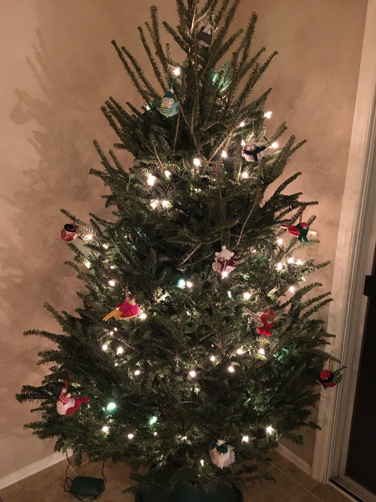
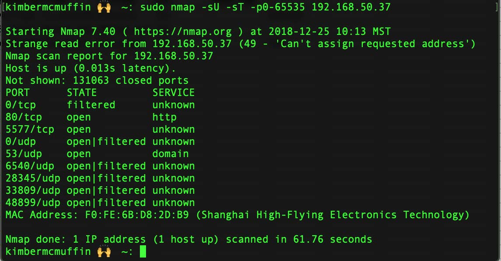
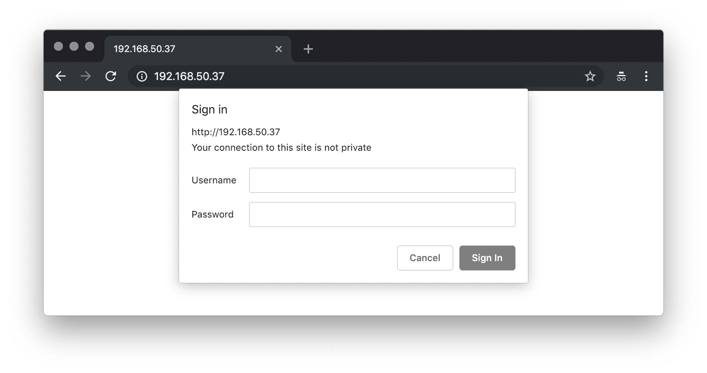
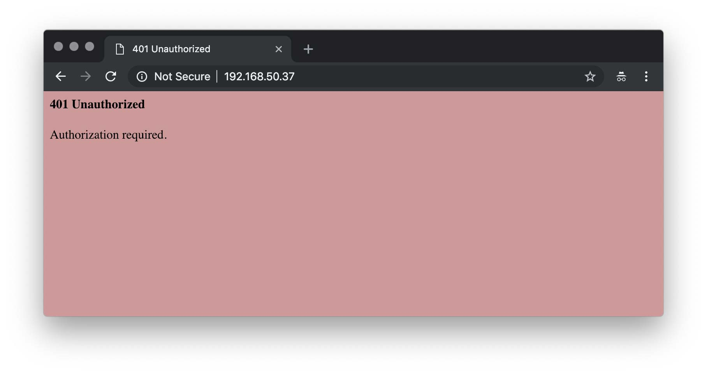
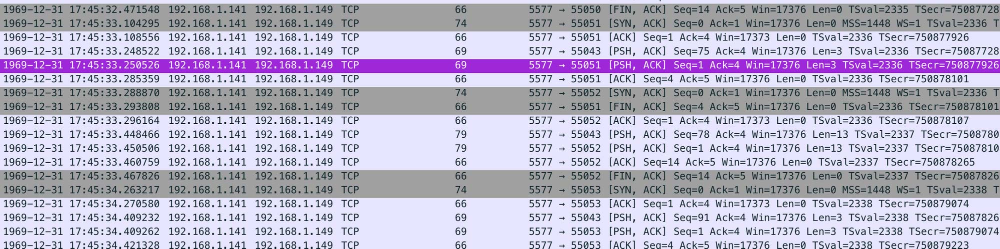
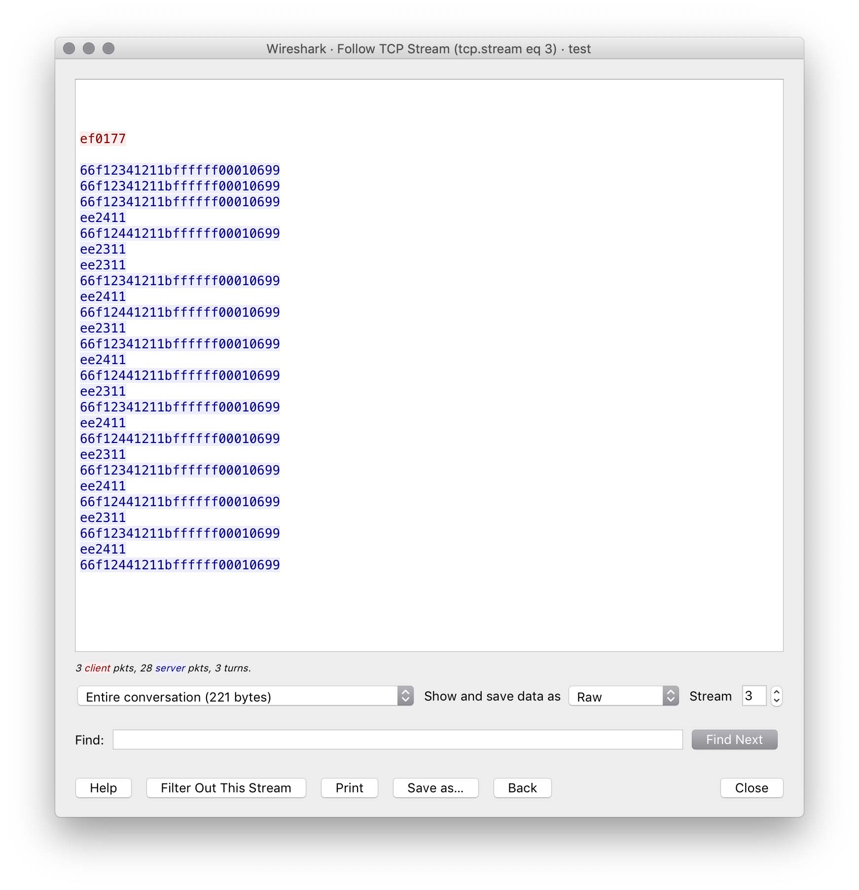
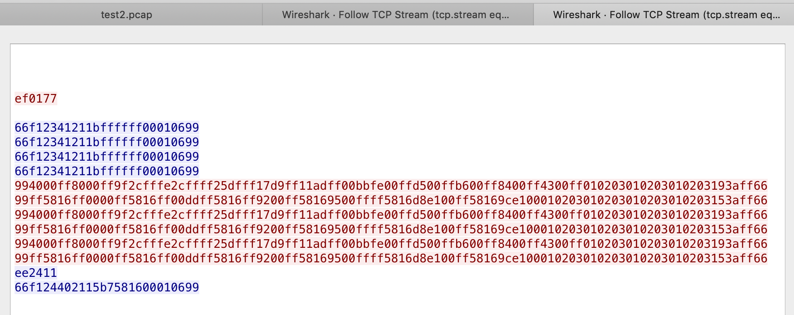
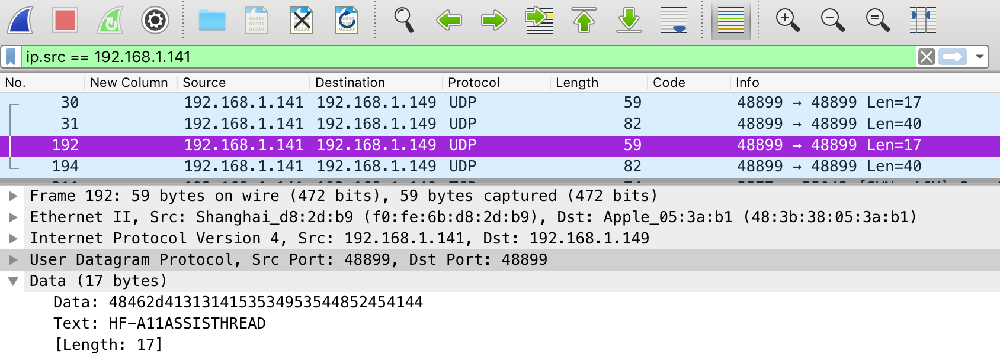
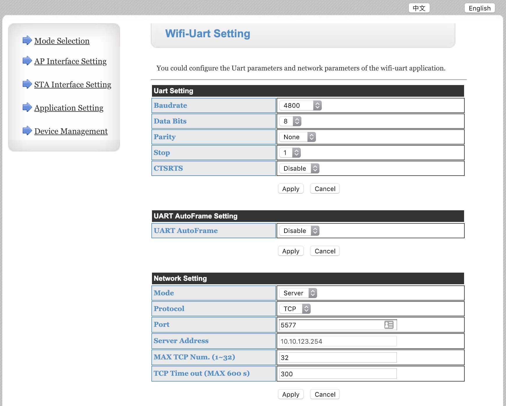

Blog: i didn't hack my christmas tree lights
date published: 2018-12-27 | date updated: 2018-12-27

Sometimes you go to Target and fall in love with the most stupid and useless yet incredibly cool product you could buy with the spare $100 you don't really have and sometimes you are even lucky enough to find a product that:
- lights up
- is connected to the internet
which personally are my two favorite things. Oh, and it's Christmastime?? Enter the Philips Illuminate Starter Kit of 25 C9-sized LED lights.
While many wi-fi app controlled LED lights come in LED light strip form, these lights in particular come attached to each other on a typical Christmas light string setup, but at the end of the cord about a foot from the plug is a green control box. 25 lights isn't really enough to make a standard Christmas tree look good, so I bought some supplemental lights and hooked these babies up then got them connected to my wifi ASAP. You can buy additional Philips Illuminate branded extension light strings to hook up to your main strand, which maxes out at 300 lights per control box.

In order to connect to your Philips Illuminate lights, you download the Illuminate app, connect to the wifi the control box emanates, and provide the control box with the login to your home wifi. Once you hook the control box up to your home wifi, everything is all set for app control. The app can do A Bunch of Cool Things, including a huge amount of pre-programmed light patterns, the ability to make your own custom patterns, and a mode where the lights react to your voice... super creepy but great for the cool trick factor.
The ease of this all means the lights are absolutely worth the sale price of $79.99 (originally $99.99!), right? But it'd be nice to get them to do a little more, or at least be able to deconstruct how they work. After running through the programs available on the app, creating my own programs on the app, and poking around to see if anybody had created a custom firmware for these yet, I got to the point where I started getting a bit more curious about the security of the Philips Illuminate light set.
First of all, if these things are on my wifi network, they've got to have an IP address and my particular starting point for poking at things on my network is to do an nmap scan:

Choose whatever nmap scan you want, but this one hits all the ports tcp and udp so you can get a general idea of what the network functions of this device are. From this scan, I've got the easily recognizable port 80 which indicates we can browse to http://192.168.50.37 on my home network and see what's up there. I also see a pretty neat option with port 5577, which led me down a huge rabbit hole. I've never messed with smart home devices before, but apparently port 5577 is a standard control port for issuing commands to networked LED devices with a certain set of controllers. In the UDP zone, there's port 53!! Is this thing running a DNS server? There's also those various high level UDP ports which could offer up some interesting information.
In the interest of keeping things simple, I started with the port 80 web interface. By browsing to the IP address, I got a login prompt where I tried every different formulation of admin/admin, admin/password, root/[blank]... nothing.

Also note the truly beautiful shade of pink you get upon failed login... the kind of pink that makes you want to attempt more.

At this point I was pretty okay with trying anything I could to get into what I assumed was a web interface to change settings with the lights. Following this article about using Burp to brute force a login page yielded no results. This article about using Hydra to brute force a login page... also yielded no results. Double heck!
NOTE: Both of the brute force options would have worked if I had a certain reversed common username in any of the wordlists I used... remember to use good wordlists, pals. But I didn't, so I carried on.
The next thing I wanted to try was getting a PCAP of the app issuing commands to the lights, because maybe the password would be visible over the wire! At this point I was mistakenly assuming that the app was issuing API calls over port 80 via authenticated HTTP at the very least. I didn't have an easy way right off the bat to grab a PCAP, so I turned to asking people around me what they'd do next. We ended up decompiling the Philips Illuminate APK to try and find the password. It was a really great way to get a crash course in Android app development, but didn't yield any results HTTP login password-wise. I did get a bit more information about these lights though: the original developer is a company called Zengge and also got some model information from examining the APK. I wasn't right about the HTTP posts for the control of the lights, so on to the next option.
Doing more research about port 5577 gave me the confirmation that it was time to put these things on an isolated test network just to be able to make sure nothing else was messing with them and snatch a pcap of opening my app and issuing a series of on-off commands:

and look! Confirmation that commands are indeed issued over port 5577. But how can you confirm for absolutely certain that it's not just random chatter? Follow the streams:

That's what a series of on-off commands looks like, and here's what a series of switching between the two custom programs I made on the app look like:

So as you can see, a bit more complicated when you get into the fancy settings like color changes and fade speeds. When looking through the pcaps for different kinds of requests, there's not a whole bunch more information beyond the promise of the ability to issue totally unauthenticated commands. This makes it unnecessary to have the HTTP page login for the purposes of controlling the lights without the app, but I was still really interested in finding the password. What was that terrible pink 404 error hiding?
Our next port to explore was confirmed as the one interesting artifact I found in the PCAPs I took: this controller randomly spits out the either the ip address, hostname, mac address in a string or every so often a string of "HF-A11ASSISTHREAD" over UDP on port 48899.

This didn't correspond with any hostnames, so I immediately threw it into Google and found out some excellent information about the Zengge Lightbulb manufacturing company thanks to vikstrous on Github. This source not only gave me some insight onto what's going on with this magical box and lights, but also the admin/password to login to the web interface (finally)!
What is going on here anyways? What we know at this point is that there's 25 LEDs controlled by a control box. The control box has a wifi card in it which has the ability to not only broadcast but also connect to a wifi network. This card also runs a UART (Universal Asynchronous Receiver/Transmitter) that accepts commands over port 5577. The mysterious port 48899 is the ability to control some options for the device, but lucky for me the default HTTP login found on the internet for the device works!

Here is where we can configure some cool information about the device's settings for sending and receiving commands, but honestly I'm not even going to touch it – since what I was really hoping for was a web interface to control the lights themselves, not really the device that controls communication to them.
An additional part of this adventure that doesn't really fit into the rest of the research is that Philips is just the distributor for this product which is made by Seasonal Specialties, a company founded in 1996. Seasonal Specialities has a website that was created in Microsoft Frontpage 5.0 but also a wordpress with a default login page operating on the same web host. Yikes. These details tell me security isn't exactly a major concern at Seasonal Specialities, yet these lights are a really nicely made product so I would like to tell them to please start caring! If you go through all of the trouble to rebrand the Zenegge light parts into something that becomes a well-constructed nicely working set of Christmas lights, why not go the extra mile and figure out how to cover up their lack of security?
Luckily, I've got what I need to start creating the foundation for controlling the lights without the Philips Illuminate app. I have a model of UART Controller and lights, I know that the commands aren't sent with any authentication, and I could conceivably find a way to send commands via my Raspberry Pi or create my own web interface for their control. Simply telnetting to port 5577 and repeating the same strings observed in the PCAP back at the device doesn't really work... So now it's just a matter of finding out what packages are out there to interact with this controller or building my own. I'm also tempted to see if any of the OpenHab extensions can play nice with these lights. Either way, I haven't really hacked my Christmas lights, I just found out a TON of information about how they work and function. The true hack will come when I find a way to make them work without their intended supporting software.
Thanks to some sources:
https://www.jpelectron.com/sample/Electronics/WiFi%20LED%20control/
https://github.com/renebohne/wifirgbcontroller